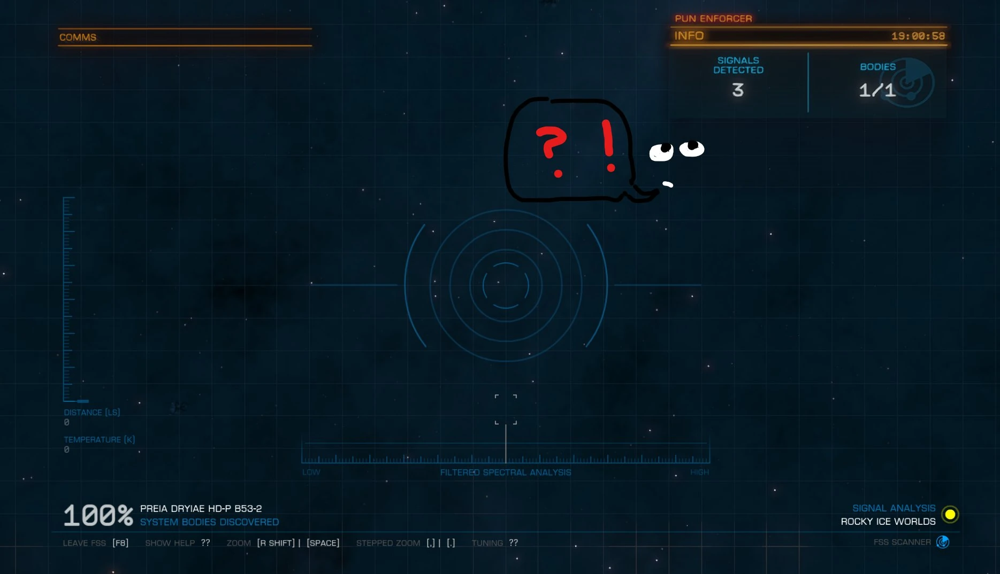
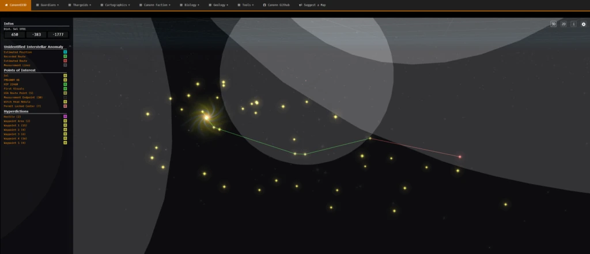

An ongoing investigation into the nature of the Unidentified Interstellar Anomaly. Please note that the information is provided by a large number of participants and much has been left out until it is prepared for publication. If the is any information or methodology that you would like access to then please ask on our discord.The document will be updated as additional findings are released. Please contact us if you see any errors or if you would like to add a contribution.
This unknown object defies the laws of physics. From the start people have sought to keep it secret and the powers have neglected to make the true nature of this threat public so that all of humanity can prepare. Look up!
Dr Arcanonn
Editor: LCU No Fool Like One
Contributors:CMDR Yumasai, CMDR Seven (Seventh_Circle), CMDR CodexNecro81, CMDR CharmingFawn, CMDR Hurix, CMDR G SuitCase, CMDR Malic, CMDR Inhibited, CMDR CP_Luiz, CMDR Goidbyte, CMDR Node, CMDR Eckee, CMDR Acred, CMDR Ereubs5, CMDR Zulu Romeo, CMDR BL1P, CMDR Erebus5, CMDR Beetlejude
With thanks to the many people who have contributed with information and data. If you think your name should be here please contact us.
| Resource | Description |
| https://map.canonn.tech/route_uia.html | A 3D map of the route that the anomaly is taking. It includes hyperdictions and permit locked sectors |
| https://canonn.fyi/thargoidsheet | A spreadsheet of Thargoid data including hyperdictions. Shows hostile hyperdictions where data available. |
| https://canonn.fyi/discord | The main Canonn discord server. Non-members welcome. We are non exclusive you can sign up as a member even if you just don't want to contribute. If you do not wish to sign up you are welcome to come and ask questions. |
| https://canonn.fyi/alerts | Canonn Alert Server. Real time notifications of data from Canonn plugins, NB: Most categories only alert when the data has not been seen in that system before not on every scan. |
| https://canonn.fyi/uiaresponses | This is a spreadheet used for recording data about the UIA and is used to update the 3D maps |
| EDMC-Canonn plugin | This is the main data gathering tool. Only the EDMC plugin has a hyperdiction detector. |
| https://map.canonn.tech/ | All 3D maps are accessible from here. Please be aware that some may not be working due to volume issues and there is a random error that can cause the maps not to load without a refresh. We are working on a solution. |
| https://canonn.fyi/5 | CMDR Erebus5 is maintaining a sheet of measurements |
| https://canonn.fyi/6 | CMDR BL1P Has recorded USS data for the UIA waypoiints |
The Unidentified Interstellar Anomaly is a radiant object that was discovered in August 3308 traveling at superluminal speeds close to the permit locked NGC 2264 Sector. The object (at time of writing) appears to be on a trajectory that would take it to the human bubble. A second UAI has been discovered
Cannon was first alerted to the presence of the Unidentified Interstellar Anomaly when commander Mass1nhibited was hyperdicted by the Thargoids while running the EDMC-Canonn plugin. Commanders were dispatched to investigate why we were seeing hyperdictions so far from any location where they had previously been seen.
We reached out to Mass1nhibited and he informed us that he had been invited to investigate the area by a group of commanders (McCoy Spaceways – Investigation Division) who were operating secretly to investigate the area from an anonymous tip-off. The question of the identity of the tipster, the means in which they gained the information and why they might want to hide their identity is unknown.
According to the information we have available, commander A Cow for All Seasons, acting on the tip-off, was hyperdicted in the area. He was joined by a number of other commanders to investigate further, and we are informed that the anomaly was spotted first by commanders Falcon91 and Artimus Tau. They claim to have been concealing their discovery for some 12 or more hours before we were alerted.
Once they had realised that their secret had been accidentally leaked, they reached out to commander Malic who is widely credited as the first person to present footage of the anomaly.
On the 9th September 3308 independent commander SolaceOpossum was exploring in Barnard's loop and discovered a second signal in the direction of the Elysian Shore, announcing it on the public networks Not long afterwards commanders converged on Slegi JD-W b46-0 and started reporting hyperdictions.
It is perhaps fortunate that Commander Mass1nhibited accidentally leaked the hyperdiction because the area is well traveled, and it is quite possible that someone else would have discovered it and made it public before them.
The first indication that something was happening was that many commanders on social media where asking why they were seeing 1 more signal recorded in the FSS than there were bodies. The significance of this was not realised until after the UIA was discovered. However reports came in of another excess signal also simultaneously with reports of the second UIA.
We would recommend that commanders frequently check the signal counts and if the count increases they should use the FSS to search for another UIA signal.

As of the 8th September 3308 the Anomaly is not longer visible at long range . It appeared to simply vanish but audio evidence indicated that it is still on the way to it.

The Unidentified Interstellar Anomaly (UIA) has eight curved green limbs radiating from the center with an equal number of blue limbs superimposed on top. The shape is reminiscent of a spiral galaxy viewed from a slight angle. When it is at its dimmest, the central portion can be quite red and when seen in low light from a distance it can look like a distant red star.

The size of the object is not known and measurements of even the small central part would make it larger than the biggest stars in the galaxy. It is likely that we are seeing nothing more than an interference pattern or lens flair.
Prior to the 8th September the anomaly could be seen from a distance of up to 300ly but clearly was not present 300 years ago. Consequently we have to conclude that the image we see is rendered by some form of radiation that is not constrained by the speed of light. The apparent brightness and size of the object does diminish with distance, became hard to see at 300ly. Since the 8th September the anomaly can only be seen for a handful of light years away.
Paradoxically, the UIA is more visible in the bright light of a star or the light from a ship drive. The two images below show how the UIA becomes less intense when the drive is turned off. The UIA is in the top centre of the images. It seems likely that the superluminal radiation of the UIA is amplified by the presence of photons through some mechanism not known to science.


The anomaly always presents the same face and orientation regardless of the position it is viewed from. This suggests that what we are seeing may be a projection or interference pattern perhaps caused by an interaction with photons.
The UIA is still visible even when it should be occluded by a planet. This could be another unusual property of its superluminal radiation. Neither is it affected by gravitational lensing from black holes, white dwarves and neutron stars.

The anomaly is not red or blue shifted by the direction of travel. This would be consistent with the theory that the perceived light seems to travel faster than light.
The object was first discovered in Oochorrs UF-J c11-0 at the south of the permit locked NGC 2264 Sector. This is the permit locked bubble next to the Col 70 permit lock region. We believe it may have come from the permit locked system NGC 2264 Sector RE-Y c14-0 by extrapolating the route backwards. However this is by no means certain.
The 3D Map shows permit locked systems for which we have coordinates.

The anomaly was initially presumed to have a constant velocity, and this is still a common belief. After the first non-permit-locked system was passed it started to become clear.
Velocity is not constant from each hop system to system.
There were very few initial measurements of the anomaly and this meant we had very little to go on to calculate the velocity. Thus we were left with the initial 0.666Ly / hour (recurring) velocity. This had the unfortunate side effect of not allowing us to detect changes in velocity between each system-system hop itself.
This is still a point of difficulty and some commanders were still working frantically to take as many measurements as possible to key down positions and take velocity measurements until we lost visual contact on the 8th September 3308
Because of the speed of the anomaly solo-commander endeavors have slight inaccuracies which is putting doubt into some of the measurements- even assuming constant velocity.
Between the system's Oochorrs CS-F c13-0 and Oochorrs BS-F c13-0 the anomaly was reported to suddenly increase in speed rapidly halfway through its transit. By several orders of magnitude.
Some commanders calculate the speed could have been over 300Ly / day at the peak.
It is near-impossible to know if this speed increase has happened before because of the difficulty and number of repeats of measurements needed to verify such a thing. It is likely more research will be done to verify the behavior if it is possible to locate the object now that it is no longer visible..
Earliest reports by CMDR Malic on public streams, comparing screenshots, have noticed that the anomaly appeared to be moving. Since the commanders have been tracking its progress through a number of systems using various methodologies. However efforts to predict he time of transit between systems has been frustrated by changes in speed.
Canonn are maintaining a 3D map showing the systems that the UIA has transited through and the projected destination, it's current estimated position on route as well as all the intersecting lines used to calculate the position, speed and destination.
Despite changes in direction and speed it looks like the route will bypass permit locked areas and is headed towards human occupied space.
A spreadsheet is being maintained with locations and estimated speeds. https://canonn.fyi/uiaresponses

Several methods were being used to track the speed and location of the UIA. Now that it is no longer visible at a distance efforts will be need to focus on identifying the target systems from hyperdictions and Unidentified Signal Sources. It is still possible to calculate a position and speed bu using the FSS and pinpointing the position with sound alone.
The location of the UAI first needs to be determined at points in time and then the speed can be calculated.
These are some of the methods used. These will be documented in separate articles.

The anomaly has a much larger range of audio emissions in FSS than its visually perceived radiation. CDMRs in Odyssey report an audible range of 2000-4000 Ly when pointing the FSS directly at the estimated position of the UIA. These sounds, most noticeable in the low to medium spectrum of the FSS, are appearing to be fading out with distance.
The sounds from the anomaly are non-local to the extent that they are heard simultaneously across the galaxy but the amplitude diminishes with distance.
On a specific FSS bandwidth selection, the noise from the FSS sensor is diminished, almost nullified. With greater distances, this effect becomes harder to achieve, with the need of an almost perfect alignment to the anomaly to be able to reproduce the effect.

Bandwidth on FSS to reduce or almost nullify theScanner static background noise
The first indication that there was something in the area was the hyperdictions detected by the team of non-canonn members investigating the area.
As of writing there have been hundreds of hyperdictions recorded by the EDMC-Canonn plugin and can be visualised on our 3D Map at http://map.canonn.tech/hyperdiction_data.html
While the UIA was closer to Oochorrs UF-J c11-0, every recorded hyperdiction terminated at this system.
Once the UIA had traveled over 50% the way to Oochorrs CS-F c13-0, new reports of hyperdictions came in.
One hyperdiction was reported as jumping out of this second waypoint system towards Oochorrs BS-F c13-0 and Thargoids being instantly aggressive, killing the CMDR. This is leading to the current theory that:
The UIA seems to be dragging an aggressive hyperdiction zone with it, where the closest system to it will trigger hyperdictions.
If you end up getting hyperdicted inside that system (jumping out), Thargoids will be aggressive. Similar to HIP 22460 in the days just after the Proteus Wave, cargo or being “marked” should not matter for hyperdiction chance or aggression.
When jumping into a UIA waypoint, the hyperdictions have followed non-aggressive patterns:
When jumping out of a UIA waypoint, any hyperdictions have immediately been hostile:
We are currently monitoring the situation and gathering data on hyperdictions. All hypediction data is available fromhttps://canonn.fyi/thargoidsheet Specifically the Hyperdiction Detections sheet.
A variety of thargoid interceptor types have been present at hyperdictions. We compared the Thargoid logograms against known variants and of the few samples we have seen there is nothing to indicate a new variant or faction of thargoids.


Thargoid logograms:4D-1 2E-8 4E-1 1B-6 Click for logogram tool
Similiar to the the way hyperdictions seem to be attached to the system the UIA is currently closest to, Degraded Emissions spawn in that system in high numbers, containing Large or Small Survey Caches. They were originally assumed to be a side effect of the large amount of fleet carriers present, however, it has been observed that USS spawn in the destination after the UIA reaches the half way point on the current leg of the journey
So far, three different possibilities for commodities have been recorded:
CMDR BL1P Has recorded USS data foe the UIA waypoiints https://canonn.fyi/6
As of writing the only things the systems have in common is Icy bodies, It seems unlikely that there will be anything to look for.
We have not reached any conclusions and are unlikely to determine the nature of this anomaly if new data emerges. Look up.
He brought disaster wherever he went
The hearts of the girls was to Hell, broken, sent
They all ran away so nobody would know
And left only men 'cause of Cotton-Eye Joe